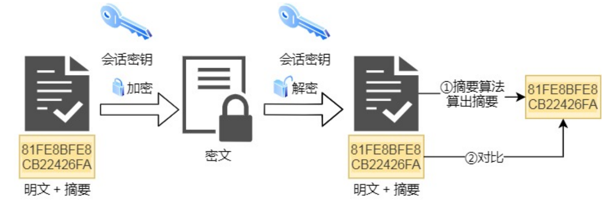

HTTP 基本概念
HTTP 是什么？描述一下。
HTTP 是超文本传输协议，也就是 HyperText Transfer Protocol。在计算机世界里专门用来在两点之间传输数据文字、图片、音频、视频等超文本数据的约定和规范。
HTTP 协议的特点
HTTP 是一个属于应用层的面向对象的协议，有五大特点：
- 支持客户/服务器模式；
- 简单快速；
- 灵活；
- 无连接；
- 无状态；
无连接？
无连接的含义是限制每次连接只处理一个请求。服务器处理完客户的请求后，并收到客户的应答后，即断开连接。采用这种方式可以节省传输时间。
因为服务器需要处理海量的网页访问，每个客户端与服务器之间交换数据的间歇性较大（即传输具有突发性、瞬时性），大部分通道实际上会很空闲、无端占用资源 ，因此 HTTP 的设计者有意利用这种特点将协议设计为请求时建立连接、请求完释放连接，以尽快将资源释放出来服务其他客户端。
随时时间推移，网页变得越来越复杂，里面可能嵌入很多图片，这时候每次访问图片都需要建立一次 TCP 连接就显得很低效。后来，Keep-Alive 被提出用来解决这效率低的问题。
无状态?
无状态是指协议对于事务处理没有记忆能力，服务器不知道客户端是什么状态。即我们给服务器发送 HTTP 请求后，服务器根据请求会返回数据，但是不会记录任何信息。
HTTP 是一个无状态协议，这意味着每个请求都是独立的，Keep-Alive 没能改变这个结果。缺少状态意味着如果后续处理需要前面的信息，则它必须重传，导致数据量增大。
两种保持 HTTP 连接状态的技术，Cookie 和 Session。
Cookie 可以保持登录信息到用户下次与服务器的会话，换句话说，下次访问同一网站时，用户不必再次输入用户名和密码了。还有一个重要的场景就是“购物车”，用户在网站不同的页面选择不同的商品，这些信息被写入 Cookie，以便在最后付款时提取信息。
Session 通过服务器来保持状态。当客户端访问服务器时，服务器根据需求设置 Session，将会话信息保存在服务器上，同时将标志 Session 的 SessionId 传递给客户端浏览器，浏览器将这个 SessionId 保存在内存中，我们称之为无过期时间的 Cookie。浏览器关闭后，这个 Cookie 就会被清掉，它不会存在于用户的 Cookie 临时文件。以后浏览器每次请求都会额外加上这个参数值，服务器会根据这个 SessionId，就能取得客户端的数据信息。
如果客户端浏览器意外关闭，服务器保存的 Session 数据不是立即释放，此时数据还会存在，只要我们知道那个 SessionId，就可以继续通过请求获得此 Session 的信息，因为此时后台的 Session 还存在，当然我们可以设置一个 Session 超时时间，一旦超过规定时间没有客户端请求时，服务器就会清除对应 SessionId 的 Session 信息。
Cookie 和 Session 的区别？
- Session 在服务器端，Cookie 在客户端。
- Session 默认被存在在服务器的一个文件里（不是内存）。
- session 的运行依赖 session id，而 session id 是存在 cookie 中的，也就是说，如果浏览器禁用了 cookie ，同时 session 也会失效（但是可以通过其它方式实现，比如在 url 中传递 session_id）。
- session 可以放在 文件、数据库、或内存中都可以。
- 用户验证这种场合一般会用 session。
HTTP 常见字段
Host 客户端发生请求时，用来指定服务器域名。
1 | Host: www.baidu.com |
Content-Length 服务器返回数据时通过该字段，表面本次回应的数据长度。
1 | Content-Length: 1000 |
Connection 客户端要求服务器使用 TCP 持久连接，以便其他请求复用。HTTP/1.1 版本的默认连接都是持久连接，但为了兼容老版本的 HTTP，需要指定 Connection 首部字段的值为 Keep-Alive 。
1 | Connection: keep-alive |
Content-Type 字段用于服务器回应时，告诉客户端，本次数据是什么格式。
1 | Content-Type: text/html; charset=utf-8 |
Content-Encoding 字段说明数据的压缩方法。表示服务器返回的数据使用了什么压缩格式。
1 | Content-Encoding: gzip |
PUT 与 POST 方法的区别
一些狭窄的意见认为，POST方法用来创建资源，而PUT方法则用来更新资源。这个说法本身没有问题，但是并没有从根本上解释了二者的区别。事实上，它们最根本的区别就是：POST方法不是幂等的，而PUT方法则有幂等性。那这又衍生出一个问题，什么是幂等？
幂等（idempotent、idempotence）是一个抽象代数的概念。在计算机中，可以这么理解，一个幂等操作的特点就是其任意多次执行所产生的影响均与依次一次执行的影响相同。
POST在请求的时候，服务器会每次都创建一个文件，但是在PUT方法的时候只是简单地更新，而不是去重新创建。因此PUT是幂等的。
GET 与 POST 方法的区别
GET 方法的含义是请求从服务器获取资源。
POST 方法的含义是向 URL 指定的资源提交数据。
GET 和 POST 方法都是安全和幂等的吗？
- 在 HTTP 协议里，所谓的「安全」是指请求方法不会「破坏」服务器上的资源。
- 所谓的「幂等」，上面也有提到就是多次操作和一次操作所产生的影响是相同的。
所以 GET 方法是 安全且幂等的，POST 方法不安全且不幂等。
HTTP 状态码
HTTP 定义了 5 类状态码，状态码由三位数字组成，第一个数字定义了响应的类别。
1XX 提示信息 - 表示请求已被成功接收，还需要后续的操作。
2XX 成功 - 报文已经收到并被正确处理。
3XX 重定向 - 资源位置发生变动，需要客户端重新发送请求。
4XX 客户端错误 - 请求报文有误，服务器无法处理。
5XX 服务器端错误 - 服务器错误，服务器在处理请求时内部发生了错误。
常见的状态码：
「200 OK」 最常见的成功状态码，服务器返回的响应头会有 body 数据。
「204 No Content」 与 200 OK 基本相同，但是没有 body 数据。
「206 Partial Content」是应用于 HTTP 分块下载或断点续传，表示响应返回的 body 数据并不是资源
的全部，而是其中的一部分，也是服务器处理成功的状态。
「301 Moved Permanently」表示永久重定向，说明请求的资源已经不存在了，需改用新的 URL 再次
访问。
「302 Found」表示临时重定向，说明请求的资源还在，但暂时需要用另一个 URL 来访问。
「304 Not Modified」不具有跳转的含义，表示资源未修改，重定向已存在的缓冲文件，也称缓存重定
向，用于缓存控制。
「400 Bad Request」表示客户端请求的报文有错误，但只是个笼统的错误。
「403 Forbidden」表示服务器禁止访问资源，并不是客户端的请求出错。
「404 Not Found」表示请求的资源在服务器上不存在或未找到，所以无法提供给客户端。
「500 Internal Server Error」与 400 类型，是个笼统通用的错误码，服务器发生了什么错误，我们并
不知道。
「503 Service Unavailable」表示服务器当前很忙，暂时无法响应服务器，类似“网络服务正忙，请稍
后重试”的意思。
HTTP 和 HTTPS
HTTP 与 HTTPS 有哪些区别？
- HTTP 协议信息是明文传输，存在安全风险。HTTPS 在 TCP 和 HTTP 网络层之间加入了 SSL/TLS 安全协议，使得报文能够加密传输。
- HTTP 连接建立相对简单，TCP 三次握手之后便可进行 HTTP 的报文传输。而 HTTPS 在 TCP 三次握手后，还需要进行 SSL/TLS 的握手过程，才可进入加密报文传输。
- HTTP 端口号是 80，HTTPS 的端口号是 433。
- HTTPS 需要向 CA (证书权威机构) 申请数字证书，来保证服务器的身份是可信的。
HTTPS 解决了 HTTP 的哪些问题？
由于 HTTP 是明文传输，所以安全上存在以下三个风险：
- 窃听风险，通信链路上获取通信内容，比如被抓包分析。
- 篡改风险，无法判断报文的完整性，可能遭到篡改，比如强制植入垃圾广告。
- 伪装风险，不验证通信方身份，因此有可能被伪装，比如冒充淘宝网站。
HTTPS 在 HTTP 与 TCP 层之间加入了 SSL/TLS 协议，可以很好的解决了上述的风险：
- 信息加密：交互信息无法被窃取。
- 校验机制：无法篡改通信内容，篡改了就不能正常显示。
- 身份证书：保证服务器是可信的。
具体是怎么实现的呢？
<一> 解决内容可能被窃听的问题–混合加密
采用混合加密的原因：
- 「对称加密」只使用一个密钥，运算速度快，密钥必须保密，无法做到安全的密钥交互。
- 「非对称加密」使用两个密钥：公钥和私钥，公钥可以任意分发而私钥保密，解决了密钥交互问题但速度慢。用公钥加密，用私钥解密。
在通信建立前采用「非对称加密」的方式交互「会话密钥」，后续就不再使用「非对称加密」。
在通信过程中全部使用「对称加密」的「会话密钥」的方式加密明文数据。
<二> 解决报文可能遭篡改问题–摘要算法
「摘要算法」用来实现完整性，能够为数据生成独一无二的「指纹」，用于校验数据的完整性，解决了篡改的风险。
客户端在发送明文之前会通过摘要算法算出明文的「指纹」，发送的时候把「指纹 + 明文」一同加密成密文后，发送给服务器，服务器解密后，用相同的摘要算法算出发送过来的明文的摘要，与客户端发送过来的摘要进行对比，如果相同则说明数据是完整的。
<三> 解决通信方身份可能被伪装的问题–数字证书认证
客户端先向服务器索要公钥，然后用公钥加密信息，服务器收到密文，用自己的私钥解密。
这就存在些问题，如何保证公钥不被篡改和信任度?
所以这里就需要借助第三方权威机构 CA （数字证书认证机构），将服务器公钥放在数字证书（由数字证书认证机构颁发）中，只要证书是可信的，公钥就是可信的。
通过数字证书的方式保证服务器公钥的身份，解决冒充的风险。
HTTPS 是如何建立连接的？期间交互了什么？
SSL/TLS 协议基本流程：
- 客户端、服务器通过
CA体系交换公钥。 - 通过非对称加密，交换用于对称加密的密钥。
- 双方采用对称加密算法，进行加密通信。
参考博客：
https://www.cnblogs.com/TankXiao/archive/2012/02/13/2342672.html